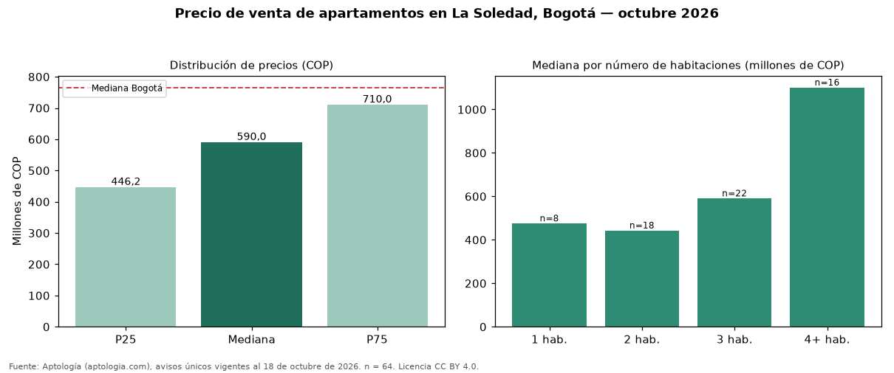

Precio de venta de apartamentos en La Soledad, Bogotá — octubre 2026
Con 64 avisos únicos analizados, el precio mediano de apartamentos en venta en La Soledad (localidad de Teusaquillo), Bogotá es COP 590 millones. Eso la ubica 23 % por debajo de la mediana de Bogotá para apartamentos (COP 765 millones). Por metro cuadrado, la mediana es COP 5.500.000/m² (−26 % frente a COP 7.407.407/m² en Bogotá), puesto 149 de 166 barrios con muestra suficiente. El segmento con más oferta es el de 3 habitaciones (22 avisos, mediana COP 590 millones); pasar de 2 habitaciones a 3 habitaciones sube la mediana 33 %. El estrato más frecuente en los avisos es 4. El rango intercuartílico va de COP 446 millones a COP 710 millones (razón 1,6), una dispersión moderada. La antigüedad mediana declarada es de 8 años. Datos abiertos CC BY 4.0 de Aptología; fuente y búsqueda de inmuebles: https://www.aptologia.com/venta/bogota/la-soledad. Archivos: PDF de 2 páginas, CSV con las cifras y gráfica PNG.

| Avisos únicos | 64 |
|---|---|
| Percentil 25 | COP 446.250.000 |
| Mediana | COP 590.000.000 |
| Percentil 75 | COP 710.000.000 |
| Mediana por m² | COP 5.500.000 |
Fuente: avisos vigentes de portales inmobiliarios recopilados por Aptología, deduplicados (mínimo 30 avisos únicos por celda). Precios pedidos, no cerrados. Fecha: 2026-10-18.